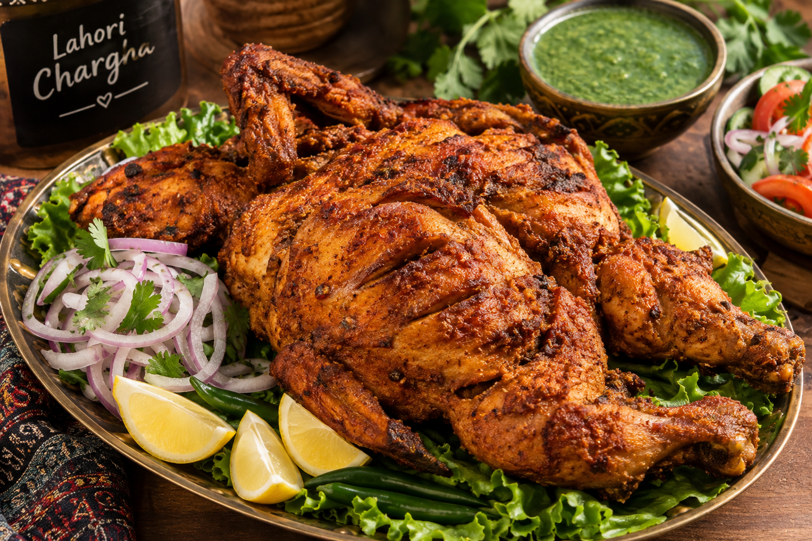

Lahori Chargha Recipe – Spicy & Crispy Pakistani Chicken

Lahori Chargha is a famous Pakistani dish made with a whole chicken marinated in yogurt, lemon juice and aromatic spices. The chicken is traditionally steamed and then deep-fried until golden and crispy.
Prep Time: 20 minutes
Marination: 4 hours
Cook Time: 50 minutes
Servings: 4
Cuisine: Pakistani
Ingredients
- 1 whole chicken (1–1.2 kg), skin removed
- 1 cup plain yogurt
- 2 tablespoons lemon juice
- 2 tablespoons ginger-garlic paste
- 1 teaspoon red chili powder
- 1 teaspoon Kashmiri chili powder
- 1 teaspoon turmeric powder
- 1 teaspoon cumin powder
- 1 teaspoon coriander powder
- 1 teaspoon garam masala
- 1 teaspoon chaat masala
- Salt to taste
- Oil for deep-frying
How to Make Lahori Chargha
- Wash and thoroughly pat dry the chicken. Make deep cuts in the breast, thighs and legs.
- Mix yogurt, lemon juice, ginger-garlic paste, salt and all the spices in a bowl.
- Rub the marinade all over the chicken, including inside the cuts.
- Cover and refrigerate for at least 4 hours, preferably overnight.
- Place the chicken on a steamer rack above simmering water. Cover and steam for approximately 30–40 minutes, until nearly cooked.
- Heat oil in a deep, heavy pot. Carefully lower the chicken into the oil and fry until golden and crispy.
- Check that the thickest part of the chicken reaches an internal temperature of 74°C (165°F).
- Remove from the oil and drain on paper towels.
- Sprinkle with chaat masala and serve hot with lemon wedges and green chutney.
Tips for Perfect Lahori Chargha
- Marinate overnight for a deeper flavor.
- Pat the steamed chicken dry before frying to reduce oil splattering.
- Use a large, deep pot and fry carefully to avoid hot oil spills.
- Serve immediately for the crispiest texture.
Serving Suggestions
Enjoy Lahori Chargha with naan, mint chutney, fresh salad, lemon wedges and chilled raita. It is perfect for family dinners, Eid gatherings and special occasions.